Culture
Lausanne est une ville riche enculture. Nous avons sélectionné quelques activités plutôt culturelles à faire à Lausanne.
Musées
Premièrement, Lausanne compte 22 musées différents, en voici quelqu'uns:
-
La fondation de l'Hermitage
-
Le Musée de la main UNIL-CHUV
-
Le Musée Olympique
-
Le Musée romain de Lausanne-Vidy
-
Platforme 10
-
La cathédrale de Lausanne
-
Le château Saint-Maire
-
L’église réformée Saint-François
-
L’église réformée Saint-Laurent
-
Théâtre Vidy-Lausanne
-
Théâtre de Beaulieu
-
Le Petit Théâtre
Elle est située dans le quartier de Sauvabelin, dans une maison de maître du 19ème siècle, entourée de jardins. Par ailleurs, elle est accessible par le bus 16, arrêt "Petit Château". Où se trouve-t-elle plus précisément? Cliquez ici! La fondation comporte 600 oeuvres exposées ponctuellement. De plus, il y a deux à trois grandes expositions temporaire par années. Ces dernières sont surtout centrées sont la peinture des 19ème et 20ème siècle. Vous trouverez des information complémentaires tel que les horaires et tarifs sur leur site internet.
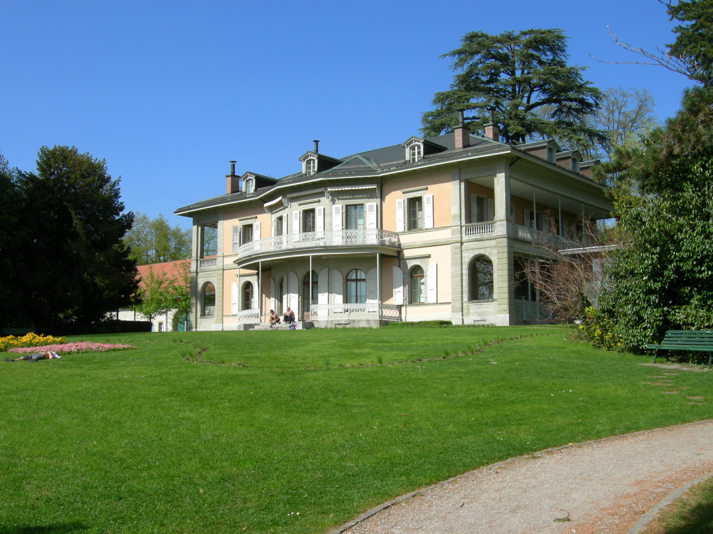Il se situe dans la Rue du Bugnon vers l'hopitâl du CHUV. Pour y aller, il suffit de prendre le m2 et de sortir à l'arrêt "Chuv".Où se trouve-t-il plus précisément? Cliquez ici!Dans ce musée il y a des expositions thématiques et ineractives. Elles peuvent être de différents domaines, tel que les sciences, la santé et la société et changent régulièrement. Pour plus d'inforamtions, sur les tarifs et horaire entre autres, nous vous conseillons de consulter leur site internet.
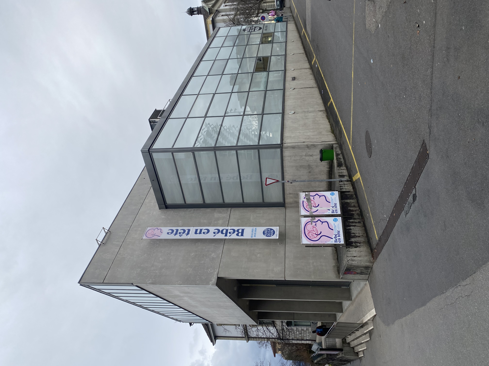 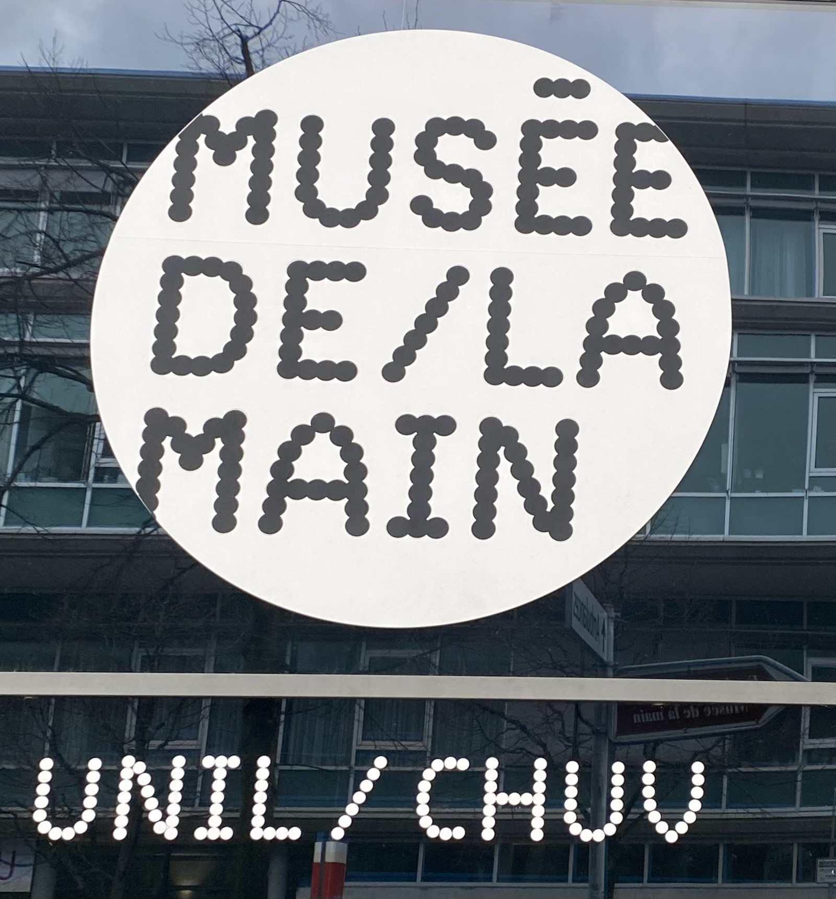Il se situe au bordu du lac Léman à Ouchy. Il est accessible par le métro m2, arrêt "Ouchy Olympique", par le bus 24, arrêt " Parc Musée Olympique" ou par les bus 21 et 25, arrêt "Musée Olympique". Où se trouve-t-il sur la carte? Cliquez ici! En premier lieu, il y a un parc avec plusieurs sculptures. Puis, le musée est constitué d'une exposition permanente, répartie sur trois étages. Au premier niveau il y a une expositon sur Le monde olympique, puis au niveau 0 une sur Les Jeux olympiques et au niveau -1 une sur L'esprit olympique. De plus, il y a aussi des expositions temporaires et événement culturels. Pour plus d'infomations voici leur site internet.
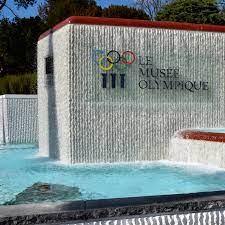Il se situe au bord du lac Léman à Vidy. Pour s'y rendre il est possible de prendre le bus 25 et de sortir à l'arrêt "Bois de Vaux". Où se trouve-t-il plus précisement? Cliquez ici! Ce musée possède deux espositions. La première est permanente et abrite les vestiges archéologiques retrouvés sur le site de Lousonna. La deuxième est temporaire, changeant chaque année et décalée par rapport au reste. Si vous souhaitez trouver des informations supplémentaires voici leur site internet.

Il se situe vers la gare de Lausanne. Ainsi, il est accessible soit par train, soit par le m2, arrêt "Lausanne gare". Où se situe-t-il sur la carte? Cliquez ici! C'est un ensemble de trois musées: Photo Elysée, Musée d’arts appliqués et contemporains – mudac et Musée cantonal des Beaux-Arts – MCBA. Pour plus d'informations voici leur site internet.
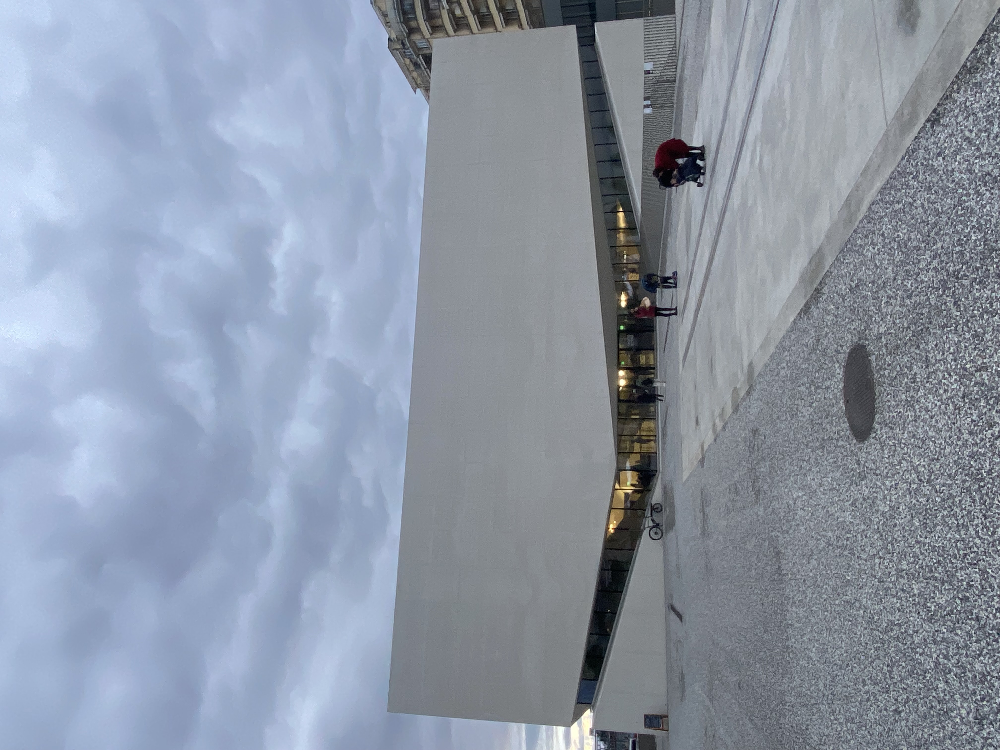Monuments
Deuxièmement, Lausanne possède divers châteaux fortifications, édifices religieux ou civils et monuments architécturales , en voici quelque'uns:
Cette catédrale, anciennenement appelée cathédrale Notre-Dame de Lausanne, a été construite entre 1170 et 1235 environ, dans un style d'architécture gothique. Cette dernière se trouve dans la vieille ville. Elle abrite le siège de l'Église évangélique réformée du canton de Vaud. Pour s'y rendre, il faut prendre le métro m2 et sotir à l'arrêt "Bessières". Où se situe-t-elle? Cliquez ici! De plus, il est possible de visiter l'intérieur de la cathédrale, si vous souhaitez trouver des informations compémentaires vous pouvez vous rendre sur le site internet.
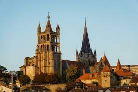Ce château se trouve vers la colline de la Cité. Il a été bâti entre 1397 et 1430. De nos jours,il accueille le siège du Conseil d'État du Canton de Vaud. Pour accéder à ce château, comme pour la cathédrale, il faut prendre le métro m2 et sotir à l'arrêt "Bessières". Où se trouve-t-il sur la carte? Cliquez ici! Dans le but d'obtenir d'autres informations, nous vous recommendons de consulter leur site internet.

Elle se situe, comme son nom l'indique, à la place de Saint-François. La fin des travaux de cette église protestante ont eu lieu en 1270. Si vous voulez vous y rendre, c'est possible en prenant le métro m2 et sotir à l'arrêt "Bessières" ou les bus 13,2,6,1,4,9,8 en sortant à l'arrêt "St FRançois". Où se trouve-t-elle sur la carte? Cliquez ici! Afin d'avoir plus d'informations voici leur site internet.
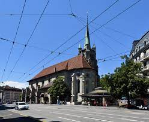Cette église se trouve à la place Saint-Laurent. Cela implique que pour y accédéer, il faut prendre le métro m2 et sotir à l'arrêt "Riponne M. Béjart" ou en prenant n'importe quel bus TL passant par les arrêts "Riponne M. Béjart" ou "Bel-Air".Où se trouve-t-elle sur la carte? Cliquez ici! Elle a été construite entre 1716 et 1719 Par ailleurs, voici le lien vers leur site internet.

Théâtres
Troisièmement, Lausanne compte plusieurs théâtres dont voici quelqu'uns:
Il se situe au bord du lac Léman, dans la région de Vidy. Ce dernier est dédié à la création d'arts scéniques contemporains. Par ailleurs, sa plus grande salle compte 400 places. Il est possible d'y arriver en prenant les bus 2 ou 24 et en descendant à l'arrêt "Théâtre de Vidy".Où se situe-t-il sur la carte? Cliquez ici! De plus, si vous voulez voir quels seront les prochains spectacle, nous vous invitons à consulter leur site internet.

Il se situe à l'avenue Bergière et compte pas moins de 1600 places assises. Il est constitué de quatres niveaux et d'un restaurant. Ce théâtre est facilement accessible en prenant les bus 2 et 21 et en sortant à l'arrêt "Beaulieu".Où se situe-t-il sur la carte? Cliquez ici! Comme pour les autres théâtres, si voulez voir ce qui y sera joué, voici leur site internet.
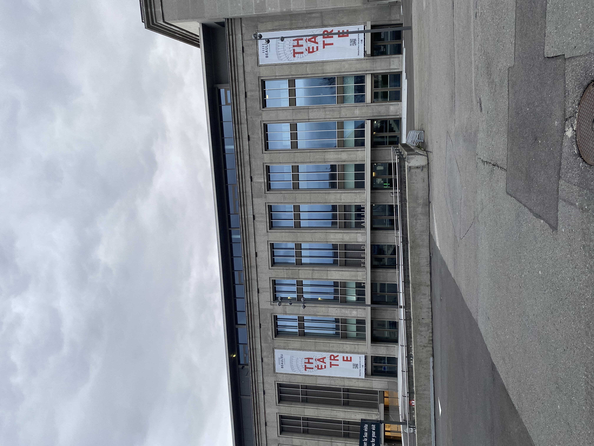 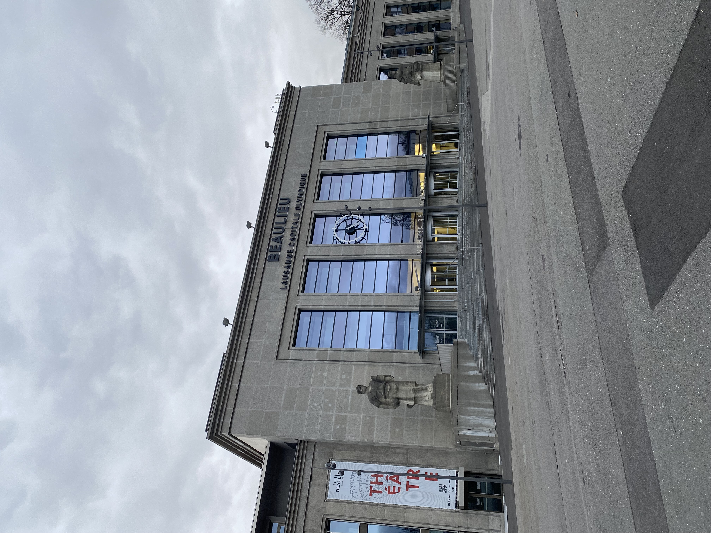Il se situe à côté de la cathédrale de Lausanne, au coeur de la Cité. C'est un lieu surtout dédié au jeune public et aux familles. Si vouy souhaitez vous y rendre, il faut prendre le métro m2 et sotir à l'arrêt "Bessières". Où se situe-t-il sur la carte? Cliquez ici! Par ailleurs, si vous voulez voir quels spectacles s'y jouent, voici leur site internet.
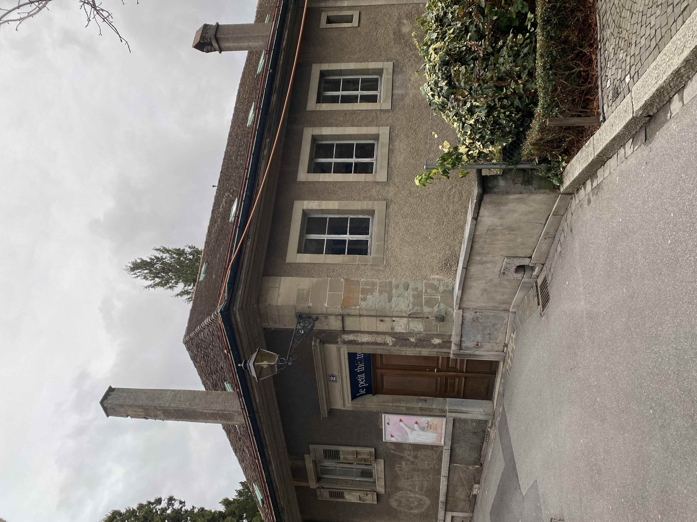 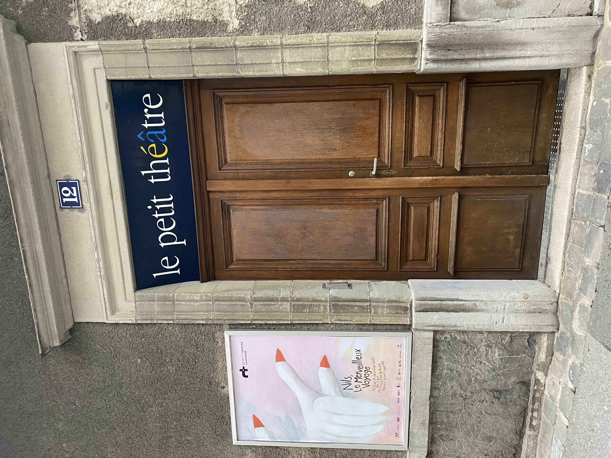